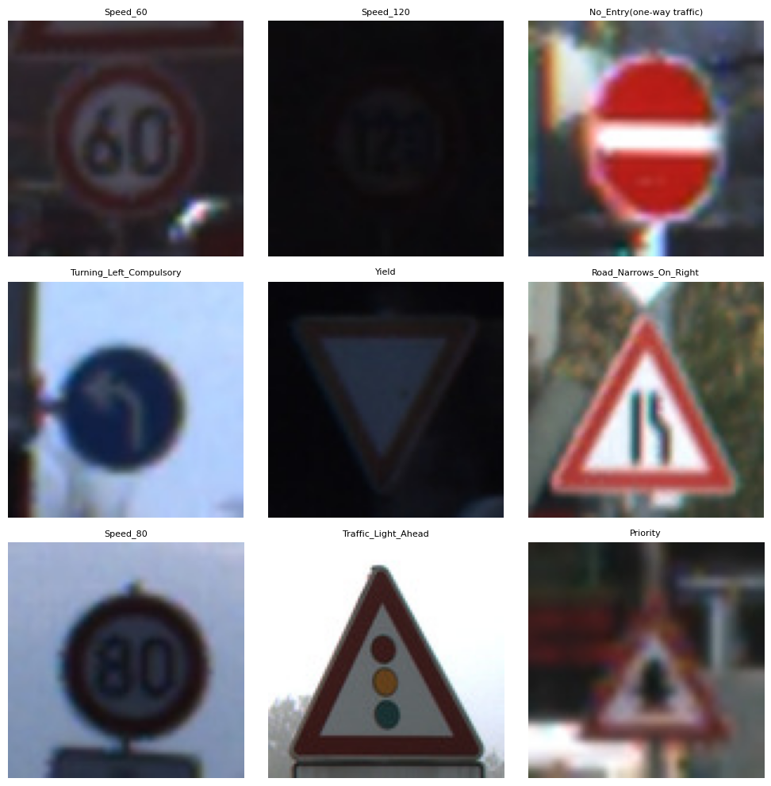

# Note: After you run this cell, the training and test data will be available in# the file browser. (Click the folder icon on the left to view it)## If you don't see the data after the cell completes, click the refresh button# in the file browser (folder icon with circular arrow)# First, let's download and unzip the data!echo "Downloading files..."!wget -q https://github.com/byui-cse/cse450-course/raw/master/data/roadsigns/training1.zip!wget -q https://github.com/byui-cse/cse450-course/raw/master/data/roadsigns/training2.zip!wget -q https://github.com/byui-cse/cse450-course/raw/master/data/roadsigns/holdout.zip!wget -q https://github.com/byui-cse/cse450-course/raw/master/data/roadsigns/mini_holdout.zip!wget -q https://github.com/byui-cse/cse450-course/raw/master/data/roadsigns/mini_holdout_answers.csv!echo "Unzipping files..."!unzip -q /content/training1.zip!unzip -q /content/training2.zip!unzip -q /content/holdout.zip!unzip -q /content/mini_holdout.zip# Combine the two traning directories!echo "Merging training data..."!mkdir /content/training!mv /content/training1/*/content/training!mv /content/training2/*/content/training# Cleanup!echo "Cleaning up..."!rmdir /content/training1!rmdir /content/training2!rm training1.zip!rm training2.zip!rm holdout.zip!rm mini_holdout.zip!echo "Data ready."
Downloading files...
Unzipping files...
Merging training data...
Cleaning up...
Data ready.
# Import librariesimport pandas as pdimport tensorflow as tffrom tensorflow import kerasimport matplotlib.pyplot as pltimport numpy as npfrom tensorflow.keras.preprocessing.image import ImageDataGeneratorfrom tensorflow.keras import layersimport seaborn as snsimport cv2from pathlib import Pathimport osfrom sklearn.metrics import classification_report, confusion_matrix
# We're using keras' ImageDataGenerator class to load our image data.# See (https://keras.io/api/preprocessing/image/#imagedatagenerator-class) for details## A couple of things to note:# 1. We're specifying a number for the seed, so we'll always get the same shuffle and split of our images.# 2. Class names are inferred automatically from the image subdirectory names.# 3. We're splitting the training data into 80% training, 20% validation.training_dir ='/content/training/'image_size = (100, 100)# Split up the training data images into training and validations sets# We'll use and ImageDataGenerator to do the splits# ImageDataGenerator can also be used to do preprocessing and agumentation on the files as can be seen with rescaletrain_datagen = ImageDataGenerator( rescale=1./255, validation_split=.2 )validation_datagen = ImageDataGenerator( rescale=1./255, validation_split=.2 )train_generator = train_datagen.flow_from_directory( training_dir, target_size = image_size, subset="training", batch_size=32, class_mode='sparse', seed=42,shuffle=True)validation_generator = validation_datagen.flow_from_directory( training_dir, target_size=image_size, batch_size=32, class_mode='sparse', subset="validation", seed=42)
Found 31368 images belonging to 43 classes.
Found 7841 images belonging to 43 classes.
#Map labels to signsimport matplotlib.pyplot as plt# target_names listtarget_names = ['Speed_20', 'Speed_30', 'Speed_50', 'Speed_60', 'Speed_70','Speed_80','Speed_Limit_Ends', 'Speed_100', 'Speed_120', 'Overtaking_Prohibited','Overtakeing_Prohibited_Trucks', 'Priority', 'Priority_Road_Ahead', 'Yield', 'STOP','Entry_Forbidden', 'Trucks_Forbidden', 'No_Entry(one-way traffic)', 'General Danger(!)', 'Left_Curve_Ahead','Right_Curve_Ahead', 'Double_Curve', 'Poor_Surface_Ahead', 'Slippery_Surface_Ahead', 'Road_Narrows_On_Right','Roadwork_Ahead', 'Traffic_Light_Ahead', 'Warning_Pedestrians', 'Warning_Children', 'Warning_Bikes','Ice_Snow', 'Deer_Crossing', 'End_Previous_Limitation', 'Turning_Right_Compulsory', 'Turning_Left_Compulsory','Ahead_Only', 'Straight_Or_Right_Mandatory', 'Straight_Or_Left_Mandatory', 'Passing_Right_Compulsory', 'Passing_Left_Compulsory','Roundabout', 'End_Overtaking_Prohibition', 'End_Overtaking_Prohibition_Trucks']plt.figure(figsize=(10, 10))# Get one batch from the generatorimages, labels =next(train_generator)batch_size = images.shape[0]for i inrange(min(9, batch_size)): ax = plt.subplot(3, 3, i +1) plt.imshow((images[i] *255).astype("uint8"))# Map numeric label to its corresponding name label_index =int(labels[i]) label_name = target_names[label_index] plt.title(label_name, fontsize=8) plt.axis("off")plt.tight_layout()plt.show()

#Mount google drive to enalble checkpoint savingfrom google.colab import drive# This command opens a new tab/window for authenticationdrive.mount('/content/drive')
Mounted at /content/drive
# Build a model...import tensorflow as tffrom tensorflow import kerasfrom tensorflow.keras import models, layers, callbacksfrom google.colab import driveimport os# ==============================================================================# 1. SETUP & CONFIGURATION# ==============================================================================# Mount Google Drive to save your best model permanentlydrive.mount('/content/drive')# ConfigurationBATCH_SIZE =32IMG_SIZE = (100, 100) # Matching the size from your original imageDATA_DIR ='/content/training/'# The location created by the download/unzip cellCHECKPOINT_PATH ='/content/drive/MyDrive/my_best_traffic_model.keras'# Save location# ==============================================================================# 2. DATA LOADING (Modern Method)# ==============================================================================print("Loading Training Data...")train_ds = tf.keras.utils.image_dataset_from_directory( DATA_DIR, validation_split=0.2, subset="training", seed=42, image_size=IMG_SIZE, batch_size=BATCH_SIZE, label_mode='int'# Returns integer labels (0, 1, 2...))print("Loading Validation Data...")val_ds = tf.keras.utils.image_dataset_from_directory( DATA_DIR, validation_split=0.2, subset="validation", seed=42, image_size=IMG_SIZE, batch_size=BATCH_SIZE, label_mode='int')# Performance Optimization: Keep data in memory to speed up trainingtrain_ds = train_ds.cache().shuffle(1000).prefetch(buffer_size=tf.data.AUTOTUNE)val_ds = val_ds.cache().prefetch(buffer_size=tf.data.AUTOTUNE)# ==============================================================================# 3. AUGMENTATION & MODEL ARCHITECTURE# ==============================================================================# def create_augmentation_layer():# return keras.Sequential([# layers.RandomRotation(factor=0.042, fill_mode='nearest'),# layers.RandomTranslation(height_factor=0.1, width_factor=0.1, fill_mode='nearest'),# layers.RandomZoom(height_factor=(-0.2, 0.2), fill_mode='nearest'),# layers.RandomBrightness(factor=0.2),# layers.RandomContrast(factor=0.2),# ], name='data_augmentation')model = models.Sequential([ layers.Input(shape=(100, 100, 3)),# 1. Normalize pixel values from 0-255 to 0-1 (Crucial for convergence) layers.Rescaling(1./255),# 2. Augmentation (Only runs during training, not validation/testing)# create_augmentation_layer(),# 3. Convolutional Blocks layers.Conv2D(32, (3, 3), activation='relu'), layers.MaxPooling2D((2, 2)), layers.Conv2D(64, (3, 3), activation='relu'), layers.MaxPooling2D((2, 2)), layers.Conv2D(128, (3, 3), activation='relu'), layers.MaxPooling2D((2, 2)), layers.Conv2D(256, (3, 3), activation='relu'), layers.MaxPooling2D((2, 2)),# 4. Classification Head layers.Flatten(), layers.Dense(256, activation='relu'), layers.Dropout(0.3), # Low dropout as requested layers.Dense(43, activation='softmax')])# ==============================================================================# 4. COMPILE & TRAIN# ==============================================================================model.compile( optimizer='adam', loss='sparse_categorical_crossentropy', metrics=['accuracy'])# Callbackscallbacks_list = [# Save the model to Drive whenever validation accuracy improves callbacks.ModelCheckpoint( filepath=CHECKPOINT_PATH, save_best_only=True, monitor='val_accuracy', mode='max', verbose=1 ),# Stop training if validation loss doesn't improve for 10 epochs callbacks.EarlyStopping( monitor='val_loss', patience=10, restore_best_weights=True )]# Run TrainingEPOCHS =50print(f"Starting training... Model will be saved to {CHECKPOINT_PATH}")history = model.fit( train_ds, epochs=EPOCHS, validation_data=val_ds, callbacks=callbacks_list)
Drive already mounted at /content/drive; to attempt to forcibly remount, call drive.mount("/content/drive", force_remount=True).
Loading Training Data...
Found 39209 files belonging to 43 classes.
Using 31368 files for training.
Loading Validation Data...
Found 39209 files belonging to 43 classes.
Using 7841 files for validation.
Starting training... Model will be saved to /content/drive/MyDrive/my_best_traffic_model.keras
Epoch 1/50
979/981━━━━━━━━━━━━━━━━━━━━0s 15ms/step - accuracy: 0.3957 - loss: 2.1406
Epoch 1: val_accuracy improved from -inf to 0.96021, saving model to /content/drive/MyDrive/my_best_traffic_model.keras
981/981━━━━━━━━━━━━━━━━━━━━39s 26ms/step - accuracy: 0.3965 - loss: 2.1379 - val_accuracy: 0.9602 - val_loss: 0.1453
Epoch 2/50
979/981━━━━━━━━━━━━━━━━━━━━0s 12ms/step - accuracy: 0.9465 - loss: 0.1815
Epoch 2: val_accuracy improved from 0.96021 to 0.98878, saving model to /content/drive/MyDrive/my_best_traffic_model.keras
981/981━━━━━━━━━━━━━━━━━━━━13s 13ms/step - accuracy: 0.9465 - loss: 0.1814 - val_accuracy: 0.9888 - val_loss: 0.0418
Epoch 3/50
977/981━━━━━━━━━━━━━━━━━━━━0s 12ms/step - accuracy: 0.9775 - loss: 0.0786
Epoch 3: val_accuracy improved from 0.98878 to 0.99337, saving model to /content/drive/MyDrive/my_best_traffic_model.keras
981/981━━━━━━━━━━━━━━━━━━━━20s 13ms/step - accuracy: 0.9775 - loss: 0.0786 - val_accuracy: 0.9934 - val_loss: 0.0253
Epoch 4/50
978/981━━━━━━━━━━━━━━━━━━━━0s 12ms/step - accuracy: 0.9829 - loss: 0.0537
Epoch 4: val_accuracy did not improve from 0.99337
981/981━━━━━━━━━━━━━━━━━━━━13s 13ms/step - accuracy: 0.9829 - loss: 0.0537 - val_accuracy: 0.9925 - val_loss: 0.0306
Epoch 5/50
978/981━━━━━━━━━━━━━━━━━━━━0s 12ms/step - accuracy: 0.9883 - loss: 0.0422
Epoch 5: val_accuracy did not improve from 0.99337
981/981━━━━━━━━━━━━━━━━━━━━13s 13ms/step - accuracy: 0.9883 - loss: 0.0422 - val_accuracy: 0.9929 - val_loss: 0.0252
Epoch 6/50
978/981━━━━━━━━━━━━━━━━━━━━0s 12ms/step - accuracy: 0.9910 - loss: 0.0308
Epoch 6: val_accuracy did not improve from 0.99337
981/981━━━━━━━━━━━━━━━━━━━━13s 13ms/step - accuracy: 0.9910 - loss: 0.0308 - val_accuracy: 0.9932 - val_loss: 0.0232
Epoch 7/50
979/981━━━━━━━━━━━━━━━━━━━━0s 12ms/step - accuracy: 0.9895 - loss: 0.0369
Epoch 7: val_accuracy improved from 0.99337 to 0.99503, saving model to /content/drive/MyDrive/my_best_traffic_model.keras
981/981━━━━━━━━━━━━━━━━━━━━13s 13ms/step - accuracy: 0.9895 - loss: 0.0369 - val_accuracy: 0.9950 - val_loss: 0.0187
Epoch 8/50
980/981━━━━━━━━━━━━━━━━━━━━0s 12ms/step - accuracy: 0.9934 - loss: 0.0221
Epoch 8: val_accuracy improved from 0.99503 to 0.99605, saving model to /content/drive/MyDrive/my_best_traffic_model.keras
981/981━━━━━━━━━━━━━━━━━━━━13s 14ms/step - accuracy: 0.9934 - loss: 0.0221 - val_accuracy: 0.9960 - val_loss: 0.0164
Epoch 9/50
981/981━━━━━━━━━━━━━━━━━━━━0s 12ms/step - accuracy: 0.9922 - loss: 0.0276
Epoch 9: val_accuracy improved from 0.99605 to 0.99617, saving model to /content/drive/MyDrive/my_best_traffic_model.keras
981/981━━━━━━━━━━━━━━━━━━━━20s 14ms/step - accuracy: 0.9922 - loss: 0.0276 - val_accuracy: 0.9962 - val_loss: 0.0172
Epoch 10/50
980/981━━━━━━━━━━━━━━━━━━━━0s 12ms/step - accuracy: 0.9944 - loss: 0.0206
Epoch 10: val_accuracy did not improve from 0.99617
981/981━━━━━━━━━━━━━━━━━━━━13s 13ms/step - accuracy: 0.9944 - loss: 0.0206 - val_accuracy: 0.9906 - val_loss: 0.0353
Epoch 11/50
907/981━━━━━━━━━━━━━━━━━━━━0s 12ms/step - accuracy: 0.9926 - loss: 0.0276
Once you have built and trained your model, the next step is to run the mini holdout images through it and see how well your model does at making predictions for images it has never seen before.
Since loading these images and formatting them for the model can be tricky, you may find the following code useful. This code only uses your model to predict the class label for a given image. You’ll still need to compare those predictions to the “ground truth” class labels in mini_holdout_answers.csv to evaluate how well the model does.
Previously, you were given a file that would check your results. This time you’re given the answers to the first mini holdout dataset. You’ll need to compare those predictions against the “ground truth” class labels in mini_holdout_answers.csv to evaluate how well the model does.
Make sure to use the insights gained from the mini hold out dataset in your executive summary.
from tensorflow.keras.preprocessing import image_dataset_from_directory
test_dir = '/content/'
test_datagen = ImageDataGenerator(rescale=1./255)
test_generator = test_datagen.flow_from_directory(
test_dir,
classes=['mini_holdout'],
target_size=image_size,
class_mode='sparse',
shuffle=False)
probabilities = model.predict(test_generator)
predictions = [np.argmax(probas) for probas in probabilities]
##Mini Hold out Dataset
Once you feel confident, you will need to predict for the full holdout dataset using the following code, and submit your csv file:
from tensorflow.keras.preprocessing import image_dataset_from_directory
test_dir = '/content/'
test_datagen = ImageDataGenerator(rescale=1./255)
test_generator = test_datagen.flow_from_directory(
test_dir,
classes=['holdout'],
target_size=image_size,
class_mode='sparse',
shuffle=False)
probabilities = model.predict(test_generator)
predictions = [np.argmax(probas) for probas in probabilities]